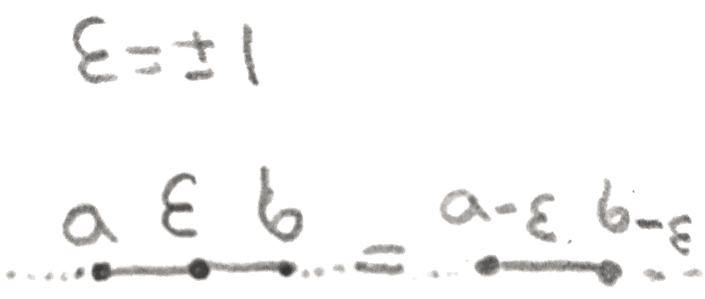

In dimension \(<3\), any manifold with the homology of a sphere is in fact a sphere. However, this is
not at all true in dimension \(3\). An easy way to see this is the following: given a Kirby
diagram, the linking matrix is the matrix \(M_{ij}\) where the off diagonal terms are the linking
numbers of the \(i^{th}\) and \(j^{th}\) (oriented) knot in the diagram, and the diagonal terms are the
framings on the components. Then this matrix represents the intersection form on the
second homology of the \(4\)-manifold. To see this, every time a \(2\)-handle is added, by the
Mayer-Vietoris sequence, we add a \(\ZZ \) to homology. However the Mayer-Vietoris sequence gives an
explicit generator of the new copy of \(\ZZ \). Namely take a surface in \(D^4\) that has boundary
the knot, and glue it to the core of the \(2\)-handle to get a surface in the \(4\)-manifold. The
self intersection of this can be computed by slightly translating the surface, in \(D^4\), and
computing the intersection with the original surface. To see the intersection number is the
linking number, one makes each surface Morse with respect to the distance from the
center of \(D^4\), and then keeping track of how the linking number changes with the critical
points.
If the \(4\)-manifold is simply connected (which always happens if you attach \(2\)-handles), then the
by Poincaré duality and the universal coefficients theorem, \(H_3(M,\partial M) = 0\), so we have the exact
sequence:
\[0 \to H_2(\partial M) \to H_2(M) \to H_2(M,\partial M) \to H_1(\partial M) \to 0\]
If the intersection form is nondegenerate, then the image of \(H_2(\partial M)\) is \(0\), as anything in the image is
clearly null in the intersection form. Thus the exact sequence above gives that \(H_2(\partial M) = H_1(\partial M) = 0\). Conversely if they
are \(0\), the map in the middle is an isomorphism, so by Poincaré duality the intersection form is
nondegenerate. Thus we get:
Theorem 1.1.The linking matrix of a Kirby diagram has determinant \(\pm 1\) iff the associated
\(3\)-manifold is an integral homology sphere.
This makes it very easy to produce lots of homology \(3\)-spheres. Here we will study a very special
one, called the Poincaré homology sphere, which will be denoted \(\Sigma (2,3,5)\).
2. Descriptions
The first description is as a plumbed \(3\)-manifold, namely that of the \(E_8\) graph shown below:
Figure 1:The \(E8\) graph, where the associated plumbed \(4\)-manifold has boundary the Poincaré
The second and third descriptions are as a Seifert fibre space and as \(-1\) surgery on the left-handed
trefoil knot, both of which are shown below:
Figure 2:Surgery descriptions of \(\Sigma (2,3,5)\).
For the Seifert fibre space, it is an \(S^1\)-bundle over \(S^2\) which is locally trivial except at \(3\) exceptional
fibres, where the stabilizer of the \(S^1\) action is \(5,3\), and \(2\) respectively.
The fourth description is the following: take \(\SOr (3)\), and quotient by the isometries of the icosahedron,
shown in Figure 3.
Figure 3:
This description is especially concrete since \(\SOr (3)\) is the unit sphere bundle on the icosahedron.
The fifth description is the following: consider the singular surface in \(\AA ^3\) given by the equation \(x^2+y^3+z^5=0\). If
you take a small ball around the origin and intersect it with this hypersurface, the intersection will
be the Poincaré homology sphere.
The sixth description is \(3\) in \(1\): for any \(\{i,j,k\} = \{2,3,5\}\), \(\Sigma (2,3,5)\) is the \(i\)-fold branched cover of the \(j,k\) torus knot (i.e. the knot
representing \((j,k)\) in the fundamental group of the standard torus in \(S^3\).
3. Equivalences
The first step is to show that the first three are the same using Kirby calculus. Namely, whenever
we have a \(\pm 1\) framed unknot, we can blow down. This means that we first slide all adjacent handles
over this handle to leave the \(v\) disjoint from everything else, and then use the first Kirby move to
remove the unknotted \(2\)-handle. The reverse process is called blowing up. The effect of this on a
graph is shown in Figure 4.

Figure 4:The effect of blowing up on a plumbing graph.
Now that we can blow up and down, we can show the first and last Kirby diagrams
of the Poincaré homology sphere are the same by blowing up and down in Figure
5.
Figure 5:We can change our Kirby diagram for the Poincaré homology sphere by blowing
up and down. In the above pictures, an unlabeled vertex has weight \(-2\). By blowing up a \(1\)
vertex on either side of the graph, we can then blow down many times, ultimately getting
the second form of the Poincaré homology sphere.
Finally, we can continue to blow down, obtaining the third description.
Figure 6:By blowing down \(3\) more times, we get \(-1\) surgery on a left-handed trefoil.
Now lets give some indication of how to get from the first to the \(4^{th}\) and \(5^{th}\) description. We can
consider quotienting \(\CC ^2\) by the binary icosahedral group, which is the pullback of the symmetry
group of the icosahedron (\(A5\)) via the covering map \(\SU (2) \to \SOr (3)\). If we take the quotient of the unit sphere, we
will get exactly the \(3^{rd}\) description. However, we can first take the quotient, and then take the
boundary of a small ball to get the equivalence with the \(4^{th}\) description. To see this, we
can take the quotient algebraically, which makes sense since the group is finite. We
view the group acting on \(\CC [x,y]\), and find the polynomials fixed by its action. There are three
polynomials \(f_1,f_2,f_3\) that will generate the fixed subalgebra, and these will satisfy exactly the relation
\(f_1^2+f_2^3+f_3^5=0\).
There are at least \(2\) ways to connect the fourth and fifth descriptions to the first three. In the
fourth description, There is a natural \(S^1\) action on \(\SOr (3)\), given by clockwise rotation. On the
Poincaré homology sphere, This action is almost free, except there are \(3\) points with
nontrivial stabilizer. The centers of a vertex, edge, or face have nontrivial stabilizers of sizes \(5,2,3\)
respectively. There is a unique Seifert fibred homology sphere over a sphere with this property
(this can be proved using Kirby calculus), so this shows that this description is the
same as the second. One can also see the Seifert fibration directly in the equation \(x^2+y^3+z^5= 0\).
Namely, \(S^1 = \RR /30\ZZ \) can act on the points via \(t(x,y,z) = (e^{\frac{2\pi i t}{2}}x,e^{\frac{2\pi i t}{3}}y,e^{\frac{2\pi i t}{5}}z)\). The points where \(z=0\) or \(x=0\) or \(y =0\) are clearly the exceptional
fibres.
There is an algebro-geometric way to get from the fifth description to the first. Namely, consider
the singular \(4\)-manifold that is a neighborhood of the origin in the \(5^{th}\) description. Then we can resolve
the singularity by blowing up many times. In our particular case, when we blowup to resolve the
singularity in a minimal way, there are \(8\) exceptional fibres, which transversely intersect as in
the \(E_8\) graph, and have self intersection \(-2\). Then the preimage of the \(4\)-manifold under this
blowup is a regular neighborhood of these exceptional fibres, which is by an example in a
previous lecture the plumbing on the \(E_8\) graph. The boundary hasn’t changed so it is still
\(\Sigma (2,3,5)\).
Finally, we can show that the \(4^{th}\) description is the same as the \(6^{th}\). Namely, consider the map from \(\Sigma (2,3,5) = \{(x,y,z) \in \CC ^3, x^2+y^3+z^5 = 0, |x|^2+|y|^2+|z|^2 = 1\}\)
to \(S^3 = \{(x,y) \in \CC ^2, |x|^2+|y|^2 = 1\}\) given by \((x,y,z) \mapsto \frac{(x,y)}{|(x,y)|}\). This is the branched covering. To see this, since a nonzero complex number has \(5\) \(5^{th}\)
roots, there are \(5\) fibres except at the trefoil, which is defined as the points for which \(x^2+y^3 = 0\). Moreover the
derivative is surjective where it needs to be so it is a branched cover, and there is a
clear \(\ZZ /5\ZZ \) action on the fibres given by multiplication on \(z\) by a \(5^{th}\) root of unity. Thus it is a
normal branched cover with Galois group \(\ZZ /5\ZZ \), but there is only one of these, namely the
\(5\)-fold cyclic branched cover. By permuting the \(2,3,5\), we can get the other branched cover
descriptions.